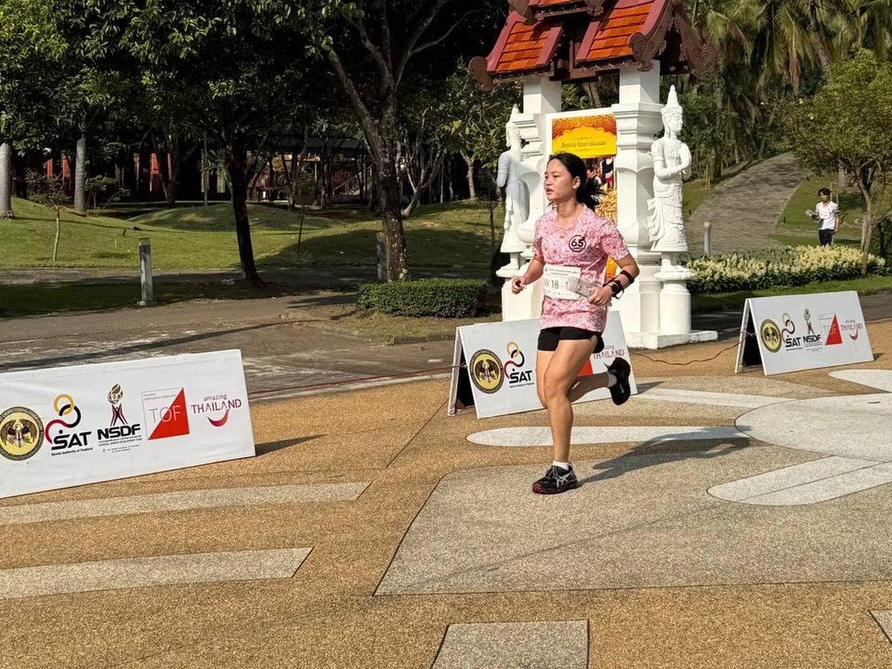
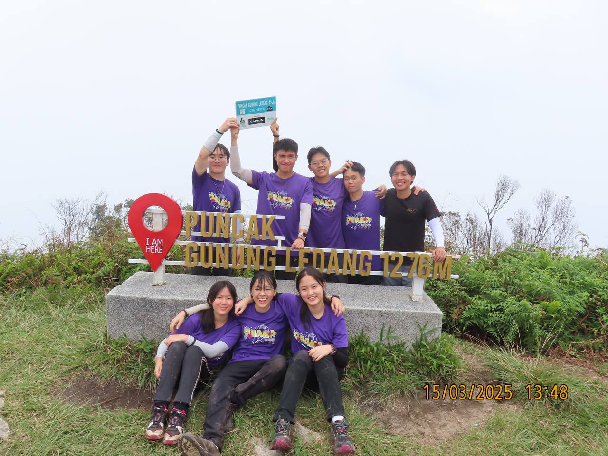
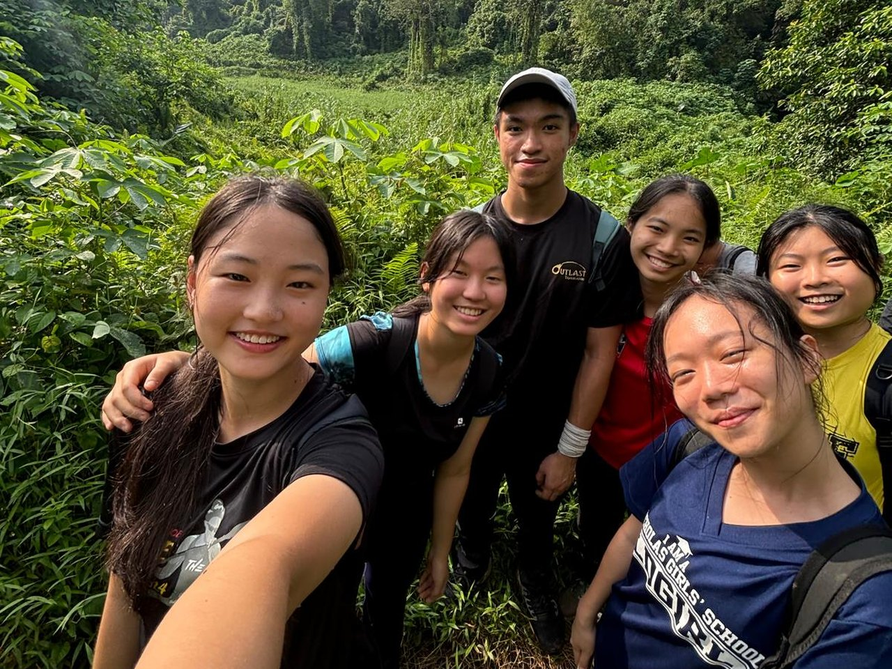

Things that move and sense
Hardware I can wire up and watch work, from a robot that maps a maze with LiDAR to a camera that replaces a car's rear view.
I'm an Electrical and Computer Engineering student at Duke, by way of Singapore. I like building things I can hold, test and break: circuit boards, robots, and now a rear view camera system for the Duke Electric Vehicles car.
Before Duke, I modelled the economics of salt-water power at NTU, found AI startups for accelerator programmes at StartupX, and spent three years helping run my school's outdoors club.

Hardware I can wire up and watch work, from a robot that maps a maze with LiDAR to a camera that replaces a car's rear view.
Whether a cleaner idea can actually pay for itself, and how to measure the problems we're trying to fix.
Getting a room full of people to show up for something, whether that's an AI meetup or a fundraiser.
“My first forest course was in China, and I got completely lost. Working out where I was and finding my way back turned out to be the best part.”
That's still how I like to work: start somewhere unfamiliar, read the map, and keep going until the pieces fit. It's why this whole site is laid out like an orienteering course.

